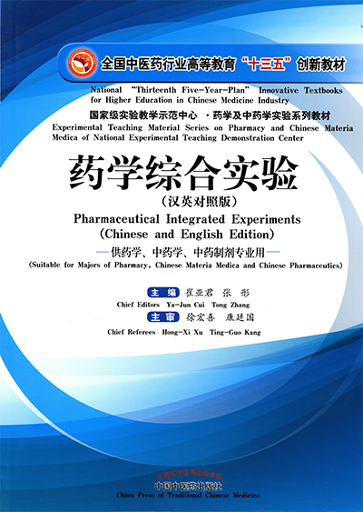
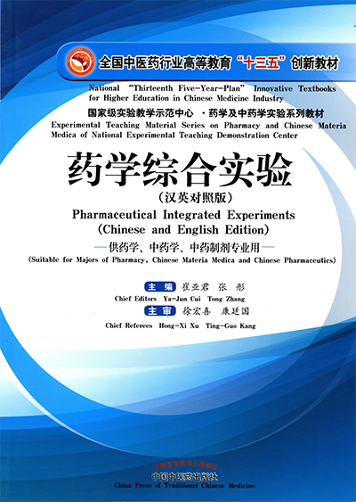

本项目采用虚实结合教学法，依托实验中心的系列虚拟实验教学资源，以中药新药研发的临床前研究部分为主线，综合运用中药鉴定、药剂、分析、药理等学科的知识指导中药新药研发实践，使学习不再受时间与空间的限制，解决了原教学中实验条件和课时不足的难题。
项目聚焦新药研究中的多个关键环节，围绕葛根、千里光设计了4个虚拟实验。选取的研究对象具有较强的代表性。其中葛根为典型的多基原中药，千里光具有一定的肝毒性，均被开发成中成药片剂用于中医临床。
实验一、中药鉴别
中药材来源复杂。学生以中药饮片识别等虚拟教学平台为载体，结合VR技术，实现中药真伪鉴别在线的学习，也弥补了名贵及毒性中药实训少的不足，培养专业兴趣。
本实验从性状和显微的角度鉴别葛根、千里光及其非正品。在掌握实验技术的同时，引导学生了解基原鉴定是保证中药安全、有效及质量可控的基础。
实验二、中药含量测定
鉴别主要解决的是药品真实性问题，含量测定和指纹图谱等检测项目则与安全性和有效性密切相关。高效液相色谱法是首选的检测方法。
本实验强化高效液相色谱仪的规范化操作，进行液相色谱条件优选。测定葛根中葛根素、千里光中金丝桃苷的含量。
实验三、中药片剂制备
剂型是适应治疗或预防的需要而制备的药物应用形式。一般中药饮片经提取等工序，再加入适当辅料，才能制成适宜的剂型。
本实验将通过虚拟实验学习压片机的使用，并将葛根提取物、千里光提取物制备成相应的片剂。
实验四、中药急性毒性评价
药学、药理毒理学是新药临床前研究的重要组成部分。药理学研究药物引起机体机能的变化；而毒理学研究药物对生物体的毒性反应及其作用机制。
急性毒性是研究动物在短期内出现的毒性反应。
本实验将学习中药急性毒性的方案设计方法，并进行葛根、千里光的急性毒性实验研究。
本项目的系列虚拟教学软件已获多项软件著作权，大大缩短了实验周期，减少实验耗材和动物使用，符合绿色实验设计和实验动物使用的3R原则。项目通过虚拟平台线上实时考核计分，线下自主实验设计及答辩等形式进行学习评价。学生能够掌握鉴别、含量测定、压片、急性毒性等实验技术，熟悉中药新药研发的关键环节和科研思路，为今后从事中医药的科学研究和生产实践打下良好的基础。